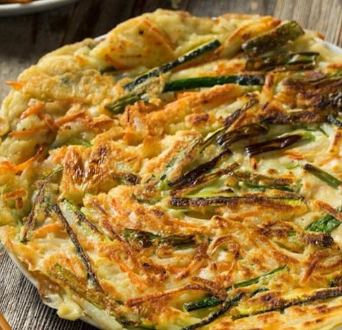
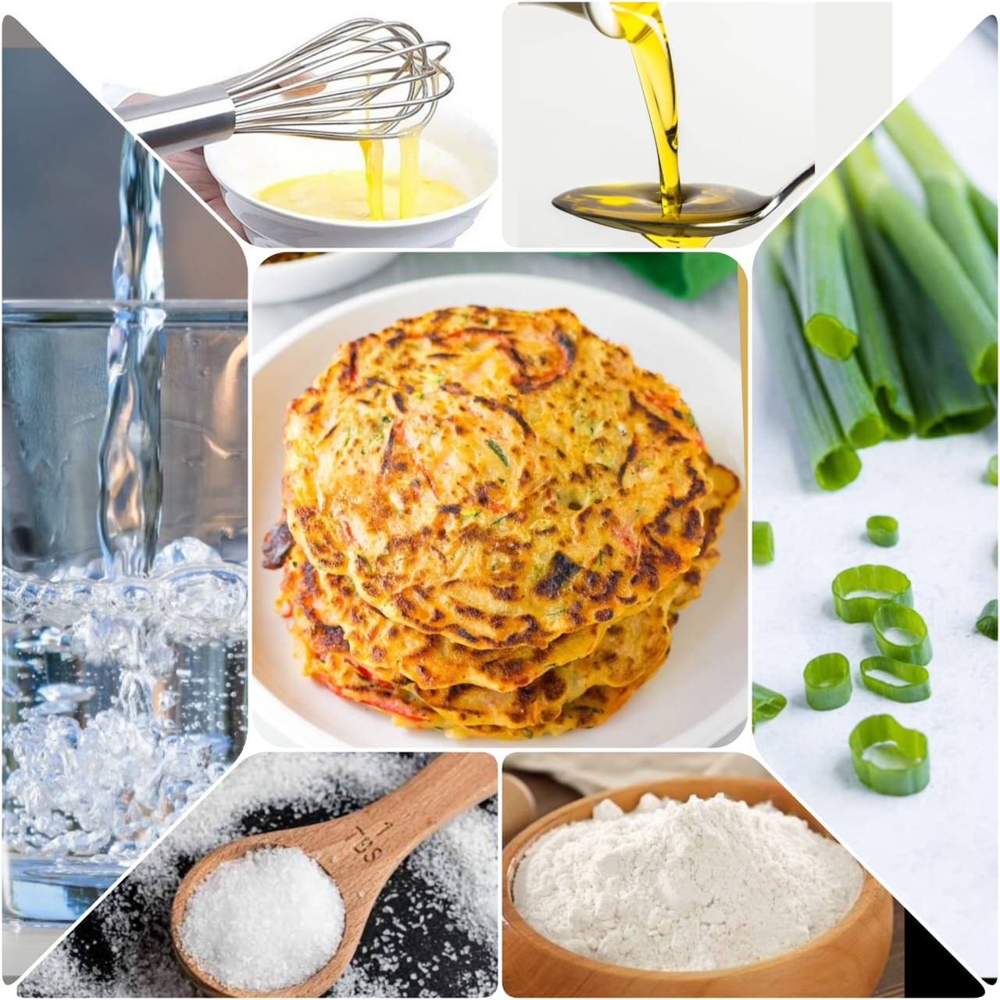

PaJeon
Home
A Korean scallion pancake is called pa jun (or pajeon ). A favorite at restaurants, this recipe will show you how easy it is to make at home. Pa jun is made with a batter of flour, eggs, salt, and water. It works as a hearty snack, appetizer, or a side dish for a Korean meal.

Ingredients
2 cups all-purpose flour
2 large eggs, beaten
1 teaspoon kosher salt
1 bunch scallions
1 1/2 cups water
1 1/2 tbsp vegetable oil
Soy sauce

Nutrition Facts
Calories 665
Total Fat 26.7g
Cholesterol 195.5mg
Sodium 796.6mg
Total Carbohydrate 80.5g
Vitamin C 0%
vitamin A 0%
Procedure
Gather the ingredients.
In a medium bowl, mix the flour, eggs, salt, scallions, and water, and let sit for about 10 minutes.
Check the consistency before cooking. The batter should be a little bit runnier than American pancake batter, which allows the pa jun to cook quickly and evenly. Add more water if needed.
Heat a medium nonstick skillet over medium heat and coat it with the oil.
Pour batter to just coat the bottom of the skillet.
Cook for 3 to 4 minutes until set and golden brown on the bottom.
Flip the pancake over with the help of a spatula.
Finish by cooking 2 to 3 more minutes.
Serve with soy sauce or a spicy dipping sauce. Enjoy.
Expert Guide
Back ←
Scroll to Top ↑